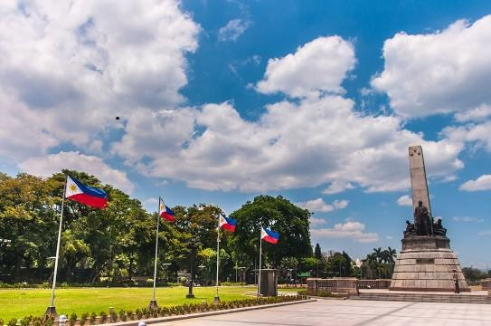
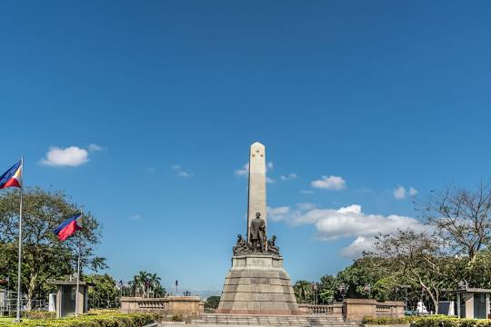
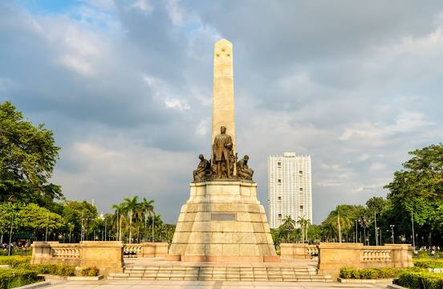
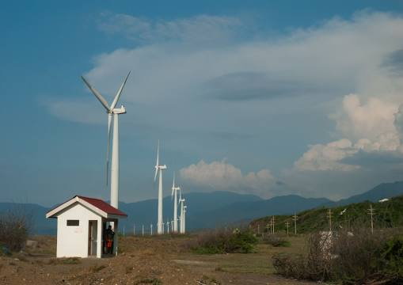
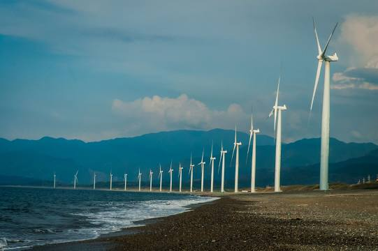
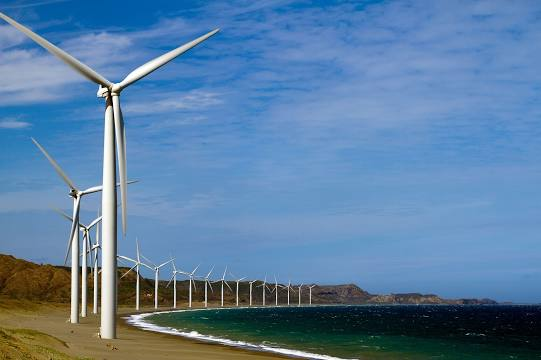

The National Museum of the Philippines is an umbrella government organization that oversees a number of national museums in the Philippines including ethnographic, anthropological, archaeological, and visual arts collections. From 1973 until 2021, the National Museum served as the regulatory and enforcement agency of the government of the Philippines in the restoring and safeguarding of significant cultural properties, sites, and reservations throughout the Philippines. The mandate has since been transferred to the National Commission for Culture and the Arts. The National Museum operates the National Museum of Fine Arts, National Museum of Anthropology, and the National Museum of Natural History, all located in the National Museum Complex in Manila. The institution also operates branch museums throughout the country. The National Museum also established and operates regional museums across the Philippines: National Museum Eastern-Northern Mindanao, National Museum Central Visayas Regional Museum, National Museum Western Visayas, National Museum Western-Southern Mindanao, and National Museum Ilocos, to name a few.
Rizal Park



Rizal Park, also known as Luneta Park or simply Luneta, is a historic urban park located in Ermita, Manila. It is considered one of the largest urban parks in the Philippines, covering an area of 58 hectares. The site on where the park is situated was originally known as Bagumbayan during the Spanish colonial period. It is adjacent to the historic Walled City of Intramuros. Situated on the eastern shore of Manila Bay, the park plays a significant role in shaping the history of the Philippines. The execution of Filipino patriot José Rizal on December 30, 1896 in the same area fanned the flames of the 1896 Philippine Revolution against the Kingdom of Spain. The park was officially named in his honor, and the monument enshrining his remains serves as the park's symbolic focal point. The declaration of Philippine independence from the United States was held here on July 4, 1946, as well as later political rallies, including those of Ferdinand Marcos and Corazon Aquino, the latter having culminated in the EDSA Revolution in 1986.
Bangui Windmills



Bangui Wind Farm is a wind farm in Bangui, Ilocos Norte, Philippines. The wind farm uses 20 units of 70-meter high Vestas V82 1.65 MW wind turbines, arranged in a single row stretching along a 9-kilometer shoreline off Bangui Bay, facing the South China Sea. Phase I of the NorthWind power project in Bangui Bay consisted of 15 of those wind turbines, each with a maximum production capacity of 1.65 MW of electric power, making a total of 24.75 MW. These 15 on-shore turbines are spaced 326 meters apart, each 70 meters high, with 41 meters long blades, with a rotor diameter of 82 meters and a wind swept area of 5,281 square meters. Phase II was completed in August 2008, and added five more of the same wind turbines, bringing the total maximum capacity to 33 MW. Ayala Corporation energy platform AC Energy, which already holds the controlling shares in Bangui Wind Farm as of 2021, has announced its intent to acquire 100% of the shares of NorthWind in order to boost their renewable energy portfolio, pending approvals from oversight entities like the Philippine Competition Commission.